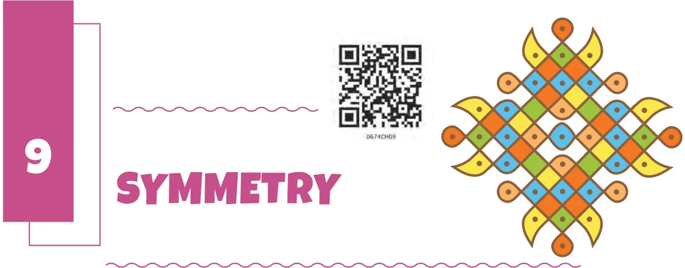
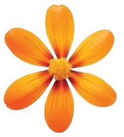
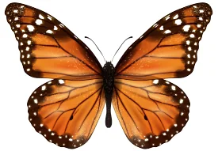
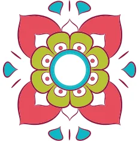
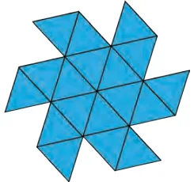
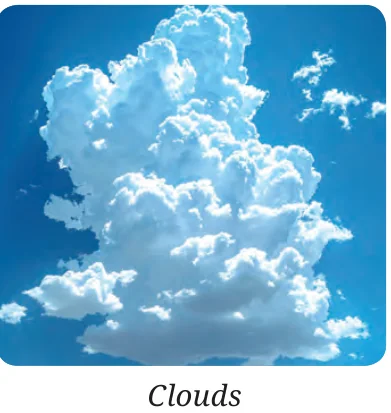

Look around you - you may find many objects that catch your attention. Some such things are shown below:


Flower Butterfly


Rangoli Pinwheel
There is something beautiful about the pictures above.
The flower looks the same from many different angles. What about the butterfly? No doubt, the colours are very attractive. But what else about the butterfly appeals to you?
In these pictures, it appears that some parts of the figure are repeated and these repetitions seem to occur in a definite pattern. Can you see what repeats in the beautiful rangoli figure? In the rangoli, the red petals come back onto themselves when the flower is rotated by 90° around the centre and so do the other parts of the rangoli.
What about the pinwheel? Can you spot which pattern is repeating?
Hint: Look at the hexagon first.
Now, can you say what figure repeats along each side of the hexagon? What is the shape of the figure that is stuck to each side? Do you recognise it? How do these shapes move as you move along the boundary of the hexagon? What about the other pictures — what is it about those structures that appeals to you and what are the patterns in those structures that repeat?
On the other hand, look at this picture of clouds. There is no such repetitive pattern.
We can say that the first four figures are symmetrical and the last one is not symmetrical. A symmetry refers to a part or parts of a figure that are repeated in some definite pattern.

Taj Mahal Gopuram
What are the symmetries that you see in these beautiful structures?